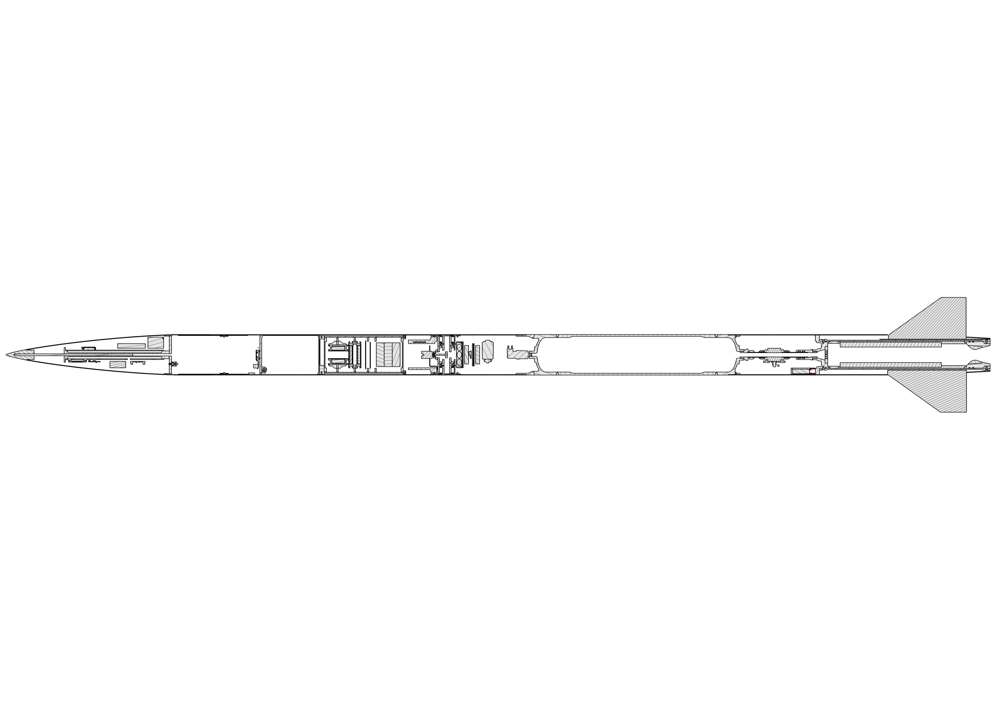
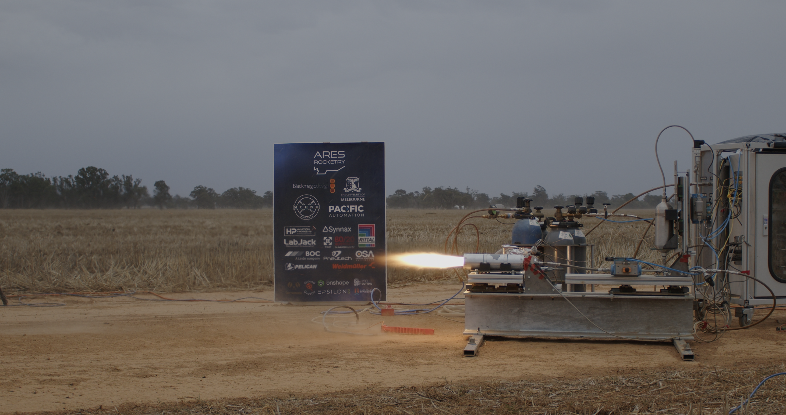

ARES Rocketry's first ever student researched and developed hybrid rocket. Nitrous oxide and paraffin-ABS propellant, M-class motor targeting 10,000 ft. I lead the 120-member team developing it, managing everything from technical direction to sponsorship, policy, and competition strategy.

Taking on the Team Lead role meant stepping back from hands-on work and into a different kind of engineering problem that has rapidly refined my leadership skills. Running such a large and complex project has posed a signficant, yet rewarding challenge. There are so many moving parts to keep track of, competing priorities, and high-impact consequences for getting it wrong. Final, large technical decisions still land with me, but the job is as much about removing blockers, maintaining momentum, and keeping 120 people aligned as it is about engineering.
My contributions to Project Odyssey include securing sponsorships that directly fund the program, writing high-level technical documentation for external stakeholders and competition officials, and introducing new ARES policy documentation to formalise how the organisation operates. On the operations side I have organised the hot fire campaign and key test events, managing the logistics, safety planning, and stakeholder communication those activities require.
External relationships are a significant part of the role, in particular liaising with University Faculty and the engineering department. Further, I manage sponsor relationships, coordinating with the Victorian Rocketry Association on launch operations, and engaging with AURC competition officials. Maintaining those relationships is what keeps the program moving and enables us to keep pushing the envelope of student rocketry.
The hot fire campaign has been a significant milestone for the project, first getting clearance from the University Faculty for a test October 2025, and then another successful day of testing in May 2026. The two engine test days we have conducted served as a test for our sub-scale engine, affectionately known within the team as Subby, a 500N engine designed to validate our engine modelling tool, ground station, and data acquisition cabinet. Subby is a critical stepping stone, and we have fired it three times, with several cold flow and ignition tests in between.
Subby, the first hybrid ARES has developed is a pivotal learning step for the team as we now transition into the testing of Genesis Engine. The testing days have been a fantastic opportunity for the team to learn how best to deploy large amounts of equipment, manage morale on the day, and deliver results under huge time pressure. The team has done an incredible job, with every testing day a great learning opportunity, and I have no doubt in the coming months we will be able to deliver success hot firing Genesis.
Stay tuned for more updates as we prepare to hot fire our full scale flight motor!

Project Odyssey — Subby Hot Fire